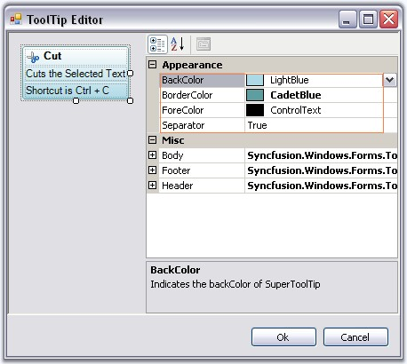
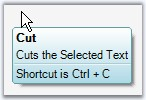
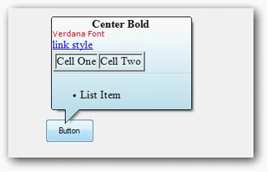

The appearance of the Super ToolTip can be customized using the below properties. This properties can be edited during design time using ToolTip Editor.
|
Property |
Description |
|
BackColor |
Sets the background gradient color. |
|
BorderColor |
Sets the border color for the control. |
|
ForeColor |
Sets the fore color for the control. |
|
Separator |
Shows or hides a separator between the Body and the Footer tooltip items. |

Figure 1447: Appearance Properties in ToolTip Editor
|
[C#]
toolTipInfo2.BackColor = System.Drawing.SystemColors.LightBlue; toolTipInfo1.BorderColor = System.Drawing.Color.CadetBlue; toolTipInfo1.ForeColor = System.Drawing.SystemColors.ControlText; toolTipInfo2.Separator = true; |
|
[VB.NET]
toolTipInfo2.BackColor = System.Drawing.SystemColors.LightBlue toolTipInfo1.BorderColor = System.Drawing.Color.CadetBlue toolTipInfo1.ForeColor = System.Drawing.SystemColors.ControlText toolTipInfo2.Separator = True |

Figure 1448: SuperToolTip with Customized Appearance
Behavior Settings
The below properties controls the behavior of the SuperToolTip control.
|
Property |
Description |
|
InitialDelay |
Indicates the time (ms) before the tooltip is shown. |
|
MaxWidth |
Sets the maximum width for the tooltip to be shown. If the text of the tooltip exceeds the maxwidth, the text wraps to the next line. |
|
ToolTipDuration |
Indicates the duration of the ToolTip (in sec) when the mouse hovers over a control. |
|
UseFading |
Specifies the fading effect for the SuperToolTip. The options are System and Blend. |
|
RightToLeft |
When set to true will display the tooltip in RightToLeft fashion. Default value is false. |
|
[C#]
this.superToolTip1.InitialDelay = 750; this.superToolTip1.MaxWidth = 500; this.superToolTip1.ToolTipDuration = 3; this.superToolTip1.UseFading = Syncfusion.Windows.Forms.Tools.SuperToolTip.FadingType.System; this.superToolTip1.RightToLeft = RightToLeft.Yes; |
|
[VB.NET]
Me.superToolTip1.InitialDelay = 750 Me.superToolTip1.MaxWidth = 500 Me.superToolTip1.ToolTipDuration = 3 Me.superToolTip1.UseFading = Syncfusion.Windows.Forms.Tools.SuperToolTip.FadingType.System this.superToolTip1.RightToLeft = RightToLeft.Yes |
Balloon Style Appearance in SuperToolTip
Style property is added to set Balloon style for SuperTooltip. SuperToolTipStyle enumeration contains Balloon and Normal value.
Set Style property to Balloon to change the SuperToolTip appearance as balloon.

Figure 1449: Balloon ToolTip
The following code illustrates how to set SuperToolTipStyle.
|
[C# .Net]
this.superToolTip1.Style = Syncfusion.Windows.Forms.Tools.SuperToolTip.SuperToolTipStyle.Balloon; |
|
[VB .Net]
Me.superToolTip1.Style = Syncfusion.Windows.Forms.Tools.SuperToolTip.SuperToolTipStyle.Balloon |